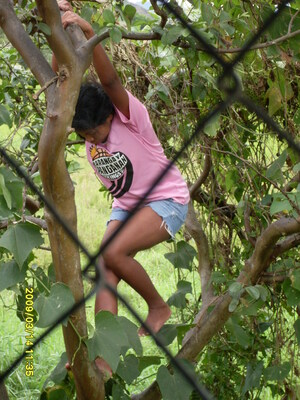
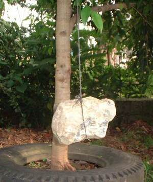
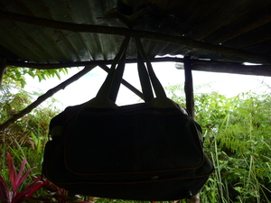

bitin   
/bitin/
v_rt.
“hang”
vt.
for someone (egbibitin, migbibitin/imbibitin, bibitin, agent, eg><ø-rdpCV-) to hang something or someone (egbitinen, imbiten/migbiten/pigbiten, bitina, theme, eg><en-) from somewhere (egbitinan, imbitinan/migbitinan/pigbitinan, bitini, location, eg><an-) with a rope (igbitin, imbitin, instrument, ig><ø-) e.g., to hang food from the ceiling so as not to be eaten by rats
Diyè te Singapore, egbitinen ka etew ne egpakasale sumalè te kandan ne balaud.
In Singapore, they are going to hang the person who committed sin according to their law.
Eng. hang; suspend
Online dict status: -
Usage level: M
n.
(bitinanan, -an-an) gallows
Eng. gallows
Online dict status: -
Usage level: R
n.
(imbitin, iN-) hang up
Ka imbitin iyan ka insanggat wey impatikang te tahù pinaahi te peggiket kayi wey pegpagket.
Imbitin dengan te amey ku ka kakey su kenè nahud egtulik ne eggaat.
My father hung up my older sister because she is a careless babysitter.
Imbitin kud ka kendiru ne insubbaan te aheley.
I tied up the pot to cook the corn in it.
Eng. hang over; tied up
Online dict status: -
Usage level: M
Updated by: RJH,RJH,TME,RJH,RAA
Last updated: 30/Oct/2009
This page last updated: 19/May/2012
Copyright © 2009-2010, Matigsalug Language Christian Association, Inc